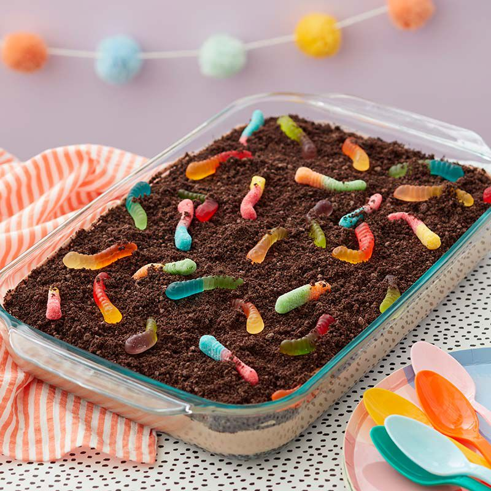

Dirt Cake

Description
This deliciousc cake looks like like dirt and taste like heaven! This cake utilizes gummy worms to imitate real dirt characteristics!
Ingredients
cake
- 1 box of chocolate cake mix
- 1 and 1/2 cups of water
- 1 and 1/3 cups of vegetable oil
- 3 eggs
dirt topping
- 4 oz pudding mix
- 2 cups milk
- 2 cups whipped cream
- 2 cups crushed cookie
- 2 cups hummy worm
- 1/4 cip chocolate fudge sauce
Directions
- Add all ingredients into a large bowl
- Pour 5 cups of water into the trash can
- Let the trash can sit for 2 days
- Collect some sticks from outside and place them into the trash can until it is full
- Try to remove trash bag from trash can. If its too easy, add 5 more cups of water
- Drop the bag and use whatever space is left in the bowl to try and collect the trash
- Eat the trash